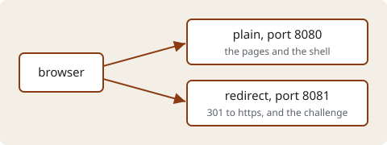
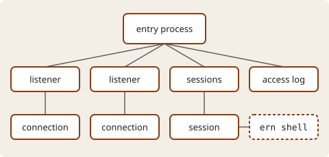

An example site
This small site is served by ernest-httpd, an HTTP/1.1 server written in Ernest, from one directory of files and one configuration. Its pages and pictures are plain files; its shell is a program on the server, which a browser reaches over a WebSocket.

This page came from the plain listener on port 8080. The redirect listener
on port 8081 serves no page: it answers 301, sending the browser to the same
path on https://localhost/, and it serves the ACME challenge, the
file a certificate authority reads to check who holds a name. This example has
no TLS listener, so nothing answers at that address. Read about the site, follow the guide, or
open the shell.

The entry process starts the others and stops them at the end. A connection
reads a socket's requests and writes its responses, and the access log writes a
line for each response. The sessions, there because this configuration has a
shell, hold a session for each visitor to the shell page. The dashed box is not
one of the server's processes: ern shell is a program of its own,
run under a terminal. The smaller processes that only read and write for these
are left out of the picture.